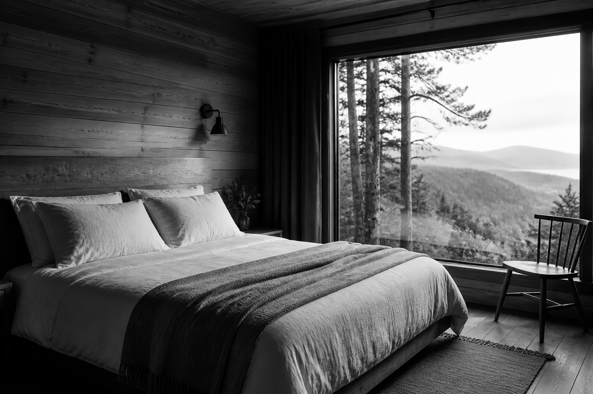

Состав гостей
Укажите взрослых, детей и общий формат поездки, чтобы подобрать комнату без лишних компромиссов.
один дом
В Маори один дом и пять комнат, поэтому важен не номер корпуса, а то, как вы хотите провести время: вдвоем, семьей, с друзьями или в очень спокойном формате.

Чтобы не обещать лишнего на сайте, спорные бытовые детали лучше подтверждать у Катерины под конкретные даты.
Укажите взрослых, детей и общий формат поездки, чтобы подобрать комнату без лишних компромиссов.
Кухня, общие зоны, парковка, животные и особые пожелания фиксируются в заявке и уточняются лично.
Удобное время приезда и выезда лучше согласовать заранее, особенно если вы едете издалека.
Совет хозяйки